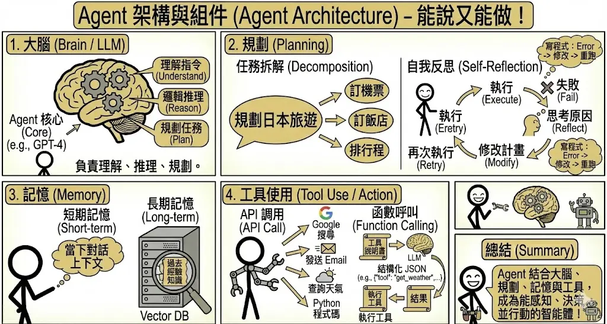
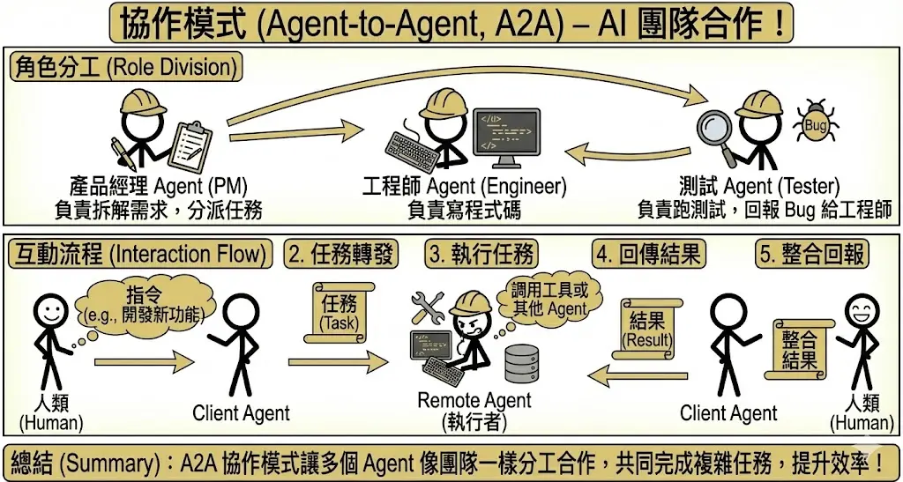

AI 代理人 (Agentic AI) 與自動化
考點摘要：從對話走向行動，Agent 的規劃、工具使用與多代理協作是進階考點。
Agent 架構與組件
傳統的 Chatbot 只能「說」，而 Agent (代理人) 能夠「做」。Agent 具備感知環境、進行決策並執行行動的能力。
1. 核心模組
一個完整的 Agent 通常包含以下四大組件：
- 大腦 (Brain / LLM)：
- 負責理解指令、進行邏輯推理、規劃任務步驟。
- 這是 Agent 的核心，通常由強大的 LLM (如 GPT-4) 擔任。
- 規劃 (Planning)：
- 任務拆解：將一個大目標（如「幫我規劃日本旅遊」）拆解成多個小步驟（訂機票、訂飯店、排行程）。
- 任務拆解：將一個大目標（如「幫我規劃日本旅遊」）拆解成多個小步驟（訂機票、訂飯店、排行程）。
- 自我反思 (Self-Reflection / Reflexion)：
- Agent 不只是執行，還會「回頭看」。
- 流程：執行 → 失敗 → 思考原因 → 修改計畫 → 再次執行。
- 類比：寫程式時遇到 Error，你會看錯誤訊息，修改程式碼，再跑一次，而不是直接放棄。
- 記憶 (Memory)：
- 短期記憶：當下的對話上下文。
- 長期記憶：透過向量資料庫 (Vector DB) 儲存過去的經驗或知識，隨時調用。
- 工具使用 (Tool Use / Action)：
- Agent 需要手腳才能與世界互動。
- API 調用：搜尋 Google、發送 Email、查詢天氣、執行 Python 程式碼。
- 函數呼叫 (Function Calling)：
- 這是 LLM 使用工具的標準機制。
- 開發者提供工具的「說明書」(JSON Schema)，告訴 LLM 這個工具有什麼功能、需要什麼參數。
- LLM 讀懂後，會輸出一個結構化的 JSON (如
{"tool": "get_weather", "location": "Taipei"})。 - 程式執行該工具，並將結果回傳給 LLM。

2. 解決方案圖譜 (Solution Graph)
在處理複雜問題時，單線性的思考往往不夠。Solution Graph 提供了一個更結構化的框架。
- 定義：將解決問題的過程建模為一個圖 (Graph)。
- 節點 (Node)：代表某個狀態或中間結果。
- 邊 (Edge)：代表採取的行動或轉換。
- 功能：它作為 Agent 的導航地圖，組織決策步驟。Agent 不是盲目地走，而是在圖上進行搜尋。
- 搜尋策略：
- 廣度優先搜尋 (BFS)：先探索所有可能的下一步，再往深處走。適合尋找最短路徑。
- 深度優先搜尋 (DFS)：選定一條路一直走到底，如果不通再回頭。適合需要深入挖掘的任務。
- 最佳優先搜尋 (Best-First Search)：評估哪條路看起來最有希望 (Heuristic)，優先走那條。
多代理系統 (Multi-Agent Systems, MAS)
當任務太複雜，一個 Agent 做不來時，我們就需要一個團隊。
1. 協作模式 (Agent-to-Agent, A2A)
- 角色分工：就像人類公司一樣，不同的 Agent 扮演不同的角色。
- 產品經理 Agent：負責拆解需求，分派任務。
- 工程師 Agent：負責寫程式碼。
- 測試 Agent：負責跑測試，回報 Bug 給工程師。
- 互動流程：
- Client Agent (發起者) 接收人類指令。
- Client Agent 將任務轉發給 Remote Agent (執行者)。
- Remote Agent 執行任務（可能需要調用工具或其他 Agent）。
- Remote Agent 將結果回傳給 Client Agent。
- Client Agent 整合結果回報給人類。

2. 常見挑戰
多個 Agent 合作雖然強大，但也帶來了新的問題：
- 無限循環 (Infinite Loops)：
- Agent A 問 Agent B，Agent B 又問 Agent A，兩人互相踢皮球，任務永遠無法完成。
- 解法：設定最大對話輪數 (Max Turns) 或引入一個「監督者 Agent」來強制終止。
- 角色定義不清：
- 如果職責重疊，兩個 Agent 可能會搶著做同一件事，或者以為對方會做結果沒人做。
- 解法：在 System Prompt 中極度明確地定義每個 Agent 的職責邊界。
- 答案衝突：
- Agent A 說要用 Python，Agent B 說要用 Node.js。
- 解法：引入「決策者 Agent」或投票機制來解決歧見。
3. 常見 Agent 開發框架
工欲善其事，必先利其器。開發 Agent 不需從頭造輪子。
- LangChain / LangGraph：
- 最流行的框架，提供豐富的工具整合與 Chain/Graph 的抽象層。
- 特色：高度靈活，適合建構複雜的單體或多體 Agent。
- LlamaIndex：
- 最初專注於 RAG，現已發展出強大的 Agentic RAG 能力。
- 特色：擅長處理資料密集型 (Data-Centric) 的 Agent，能將複雜的資料檢索策略轉化為 Agent 的工具。
- Microsoft AutoGen：
- 專注於多代理協作 (Multi-Agent Collaboration)。
- 特色：透過「對話」來解決問題。你可以定義多個 Agent (如 UserProxy, Assistant)，讓它們互相聊天來完成任務。
- Microsoft Semantic Kernel：
- 微軟推出的輕量級 SDK，強調將 LLM 與現有程式碼 (C#, Python, Java) 整合。
- 特色：企業級整合首選，特別是 .NET 生態系。強調 Plugins 與 Planners 的概念。
- CrewAI：
- 基於 LangChain，強調角色扮演 (Role-Playing) 與任務指派。
- 特色：讓 Agent 像一個團隊 (Crew) 一樣運作，每個 Agent 有明確的角色 (Role)、目標 (Goal) 與背景故事 (Backstory)。
- OpenAI Swarm (Experimental)：
- OpenAI 推出的教育性質框架，展示輕量級的多代理編排。
- 特色：強調 Handoffs (交接) 機制，讓 Agent 能將對話控制權轉交給另一個更適合的 Agent。